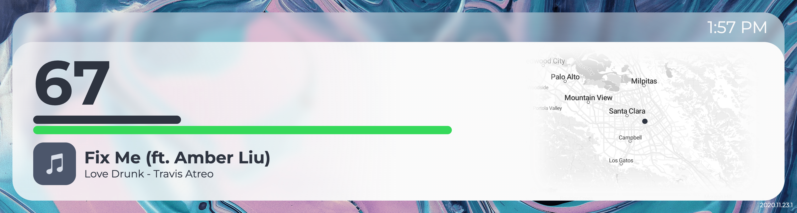
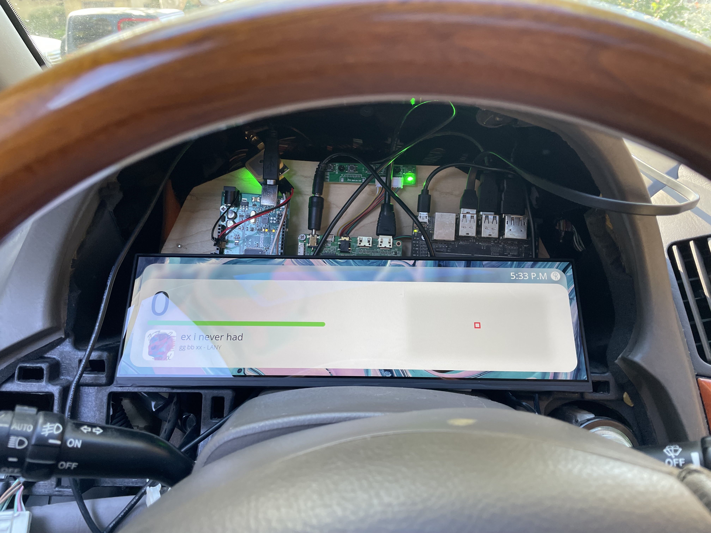
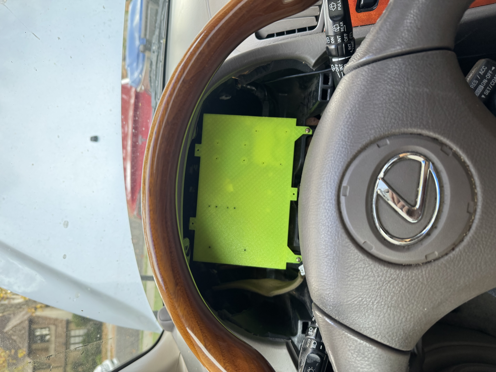
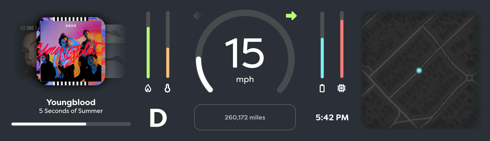
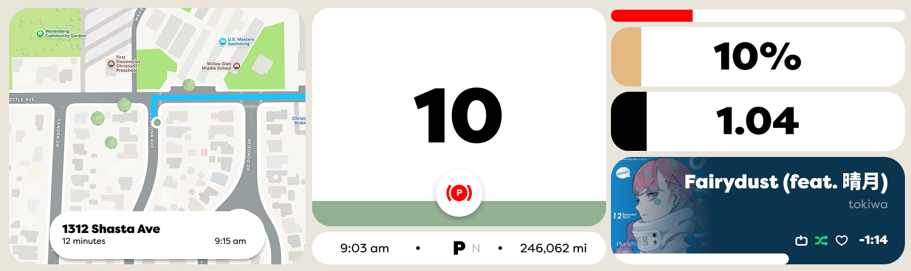

I thought creating a digital instrument cluster would be a two week summer project in my sophomore year of high school. I'd been practicing my web development skills and also was excited about the dynamic interfaces that could be created within vehicles. My family had just recently bought a Tesla Model 3 to replace our 1990s cars, which showed me for the first time that there was no reason the same level of ease, polish, and fluidity that is common on mobile and desktop operating systems couldn't be brought into more parts of our lives. I may have gone overboard. At the time, I was wondering why every appliance didn't feature a high resolution display and ARM CPU. Yet, I was excited to bring the car my family had abandoned into the future.
I started with a UI mockup in HTML/CSS and used Javascript to animate it using spoofed data. I didn't know much about design at the time. I wanted an abstract wallpaper like CarPlay, and the version number in the bottom right was inspired by Tesla. In retrospect, this design was flawed. It wasted space on the 13" ultra-wide display I was using, but it's most egregious error was that it isn't useful. What do the green and black bars represent? How do you know what direction you're facing on the map? What temperature is the engine? I knew the answers to these questions since I had created the mockup, but they were not intuitive or easy to read at a glance. For example, the RPM is prominently placed as a black bar spanning over half the display, yet it is unclear what the exact RPM of the engine is.

My first attempt at the instrument cluster UI, having very little design experience.
Despite it's flaws, I wanted to see this on a real car. And that meant I needed hardware. I started with an NVIDIA Jetson Nano because it had high resolution display outputs and was able to run Linux. I included a USB 4G LTE module to access the Spotify API and stream map data, a USB GPS module to position the vehicle on the map, and a USB to OBD-II scanner with pyODB to extract telemetry from the car. For the software, the first iteration of the instrument cluster interfaced used the same UI mockup I made previously. This interface used Javascript to connect to a backend python script over WebSockets, which would poll the GPS, Spotify, and OBD-II port at alternating intervals. Internally, I used the same UI mockup in a chromium kiosk window and a python web socket server to send system data to the frontend.
I mounted everything on to a small piece of wood I had cut to fit within the gap the previous instrument cluster filled, and connected the display and Jetson Nano with their respective 12V and 5V power adapters to an inverter in the cigarette lighter to test.

The first time I tested the instrument cluster in the vehicle.
This is where I faced my first issue. The OBD-II scanner refused to report the car's speed, gas level, or engine temperature. I sidestepped the issue of vehicle speed by using the GPS to calculate speed. This was flawed because the car could not keep the instrument cluster GPS powered without draining the battery, but turning off the GPS caused it to lose connection to satellites and thus made it impossible to know the speed of the car until it had been powered on for 5 minutes.
After researching, I found that there is a CAN connection within the wires for an OBD-II port. I also read that in older vehicles it was normal for the wires to be directly connected to the main CAN bus, as opposed to modern cars which have multiple isolated CAN loops. I bought a CAN hat for an Arduino and broke out CAN+ and CAN- but to my surprise there absolutely no data present on these wires. More research revealed that this vehicle did not use CAN whatsoever, and that was an addition for the second generation 2004 Lexus RX series.
This vehicle used a proprietary system dubbed "Toyota BEAN". There was very little documentation on this system, except for an Arduino implementation on Github, a few service documents, and scattered forum posts. The Arduino implementation did not work on my vehicle, but forums suggested it functioned similarly to serial. I connected my Arduino to MPX- and MPX+ coming into the instrument cluster, and the Arduino reported data.
I started experimenting. Opening doors would send data. Clicking the seatbelt. Locking and unlocking doors. Placing the key in the ignition. I documented which hex values corresponded to which actions for roughly a week until I encountered another problem. There were cases where two independent actions would result in the same data being published to the Arduino, and it wasn't uncommon for there to be slight corruption of the incoming data. I realized that despite the protocol being similar to serial, it was not similar enough such that I could directly connect and read data.
I was led further into the workings of this obscure, non-standard car, until I found the pin mapping between two circuit boards within the original instrument cluster itself. One of these interfaced with the main wiring harness of the car, and the other interfaced with the bulb and gauges visible on the cluster. These two boards were connected via 30 pins, including 13 individual pins controlling bulbs for indicator lights (turn signals, check engine, etc...), VCC, GND, and 4 pins suspiciously named as if they were SPI.
I connected a logic analyzer to the pins, and went to work decoding the SPI messages. SPI frames were 6 bytes, starting with a 1 byte identifier. Below is a table describing the communication protocol.
| Identifier | Format (Assume b is a byte[6]) |
|---|---|
| 0x3D |
b[1] is a one-hot encoded value representing the gearb[3] is a bitfield
|
| 0x31 Speed |
|
| 0x33 RPM | |
| 0x35 Fuel | |
| 0x37 Temperature |
Now with complete access to much of the car's critical telemetry, I turned my attention to data that was not present on these SPI lines. I was able to read the state of the bulbs using optocouplers to step down the 12V car battery to an Arduino safe 3.3V. This completed my search for data. At the time, I used an optocoupler breakout and an Arduino Uno, but to simplify this I created a custom PCB in EasyEDA using an atmega328p (for it's SPI slave capability) with on board optocouplers for 12V I/O.

The telemetry module installed in the vehicle.
I pivoted my attention to the original design's multiple software flaws. I wanted to solve the issues I previously outlined, which led me to an information dense and standardized design. It featured more prominent indicators representing the status of the car, and usability improvements based on my previous experiences. For example, this interface included an indicator to measure the voltage of the lead acid battery after realizing how quickly the battery would die when connected to the GPS. I also changed to a three column design instead of a two column design to make better use of the wide display. However, I personally did not like the identity of this design decided to make another mockup. I settled on a design with inspiration from Material Design 3 and the brand identity of Lye Software (a startup I had created with a friend during my junior year of high school).

My second, more information dense attempt at the instrument cluster UI.

My final design, inspired by Material Design 3 and the brand identity of Lye Software.
With a refreshed interface and full access to vehicle telemetry, there was only one problem left to solve. Previously, using a Jetson Nano took roughly 40 seconds to load from a cold boot. It also looked unprofessional, flashing the NVIDIA logo and Ubuntu desktop before loading the UI. Since everything ran off the lead-acid battery, I couldn't keep the Jetson Nano in a low power sleep state without encountering the same issue as with the GPS, but it was also unreasonable to wait 40 seconds before being able to safely drive. I had recently learned about a project named Circle, which promised that I could program a Raspberry Pi with bare metal C++. I knew that this had the potential to boot to a UI much quicker than any Linux based operating system.
Implementing serial to parse vehicle data in Circle was easy, but the UI was more difficult. I started by directly writing graphics to the framebuffer. I used memset and memcpy to draw shapes and load rasterized text on to the display. This achieved a consistent 45fps, but I there were still more complicated graphical effects I wanted to implement that I knew would lower the frame rate. For example, I wanted to place "bubbles" in the background of the speedometer that would morph together and increase in speed as the vehicle speed increased. After implementing these, the frame rate fell to under 20fps, which I deemed unacceptable. I needed another solution.
The Circle documentation mentioned that the Raspberry Pi 3 and below supported GPU accelerated OpenGL rendering, so I bought a Raspberry Pi 3. Moving from CPU to GPU rendering required substantial changes. Everything had to be rewritten as an OpenGL shader. Instead of rasterizing text in real time, I rasterized fonts to textures which I then draw on to a single polygon using uniforms. (I couldn't use multiple polygons because I needed unique blend modes between the text and background of gauges). Despite the many issues I encountered using OpenGL, I was able to render the UI at 60fps with headroom while maintaining the 1920x515 resolution of the panel.
A bench test of the Raspberry Pi 3 and the new OpenGL UI using captured data from the vehicle.
Now that I finally had an MVP, I took a 3D scan of the trim piece for the original instrument cluster and recreated it's shape in Fusion 360. I then modified it to house the display, printed it out, and installed the resulting product into the car.
This is where the project stands right now. You may notice that the music album art and map are currently missing. This is because I have pivoted and started work on a x64 Linux based infotainment console running a custom Wayland compositor to replace the stereo. In the future, I expect this instrument cluster to communicate with this separate infotainment system, and the infotainment system will send map tiles and music information over USB to the instrument cluster. While boot times will still be longer, because the infotainment system is not critical to driving the vehicle I am willing to trade the performance savings for access to desktop Linux apps like Spotify and Chromium.